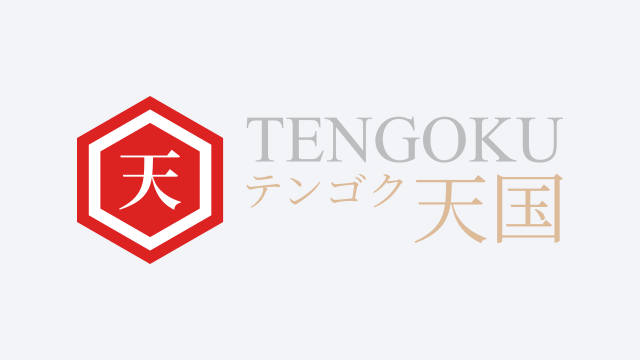

TΞNGØKU 天国
Brief Overview
TΞNGØKU 天国 (ordinarily spelled "TENGOKU", pronounced "Ten Go Cool", meaning "Kingdom of Heaven" in the Japanese Language) was a Private Community Platform for the Japanese Popular Culture Hobbyist (J-Hobbyist).
The Private Community Platform's Areas of Interest included:
- Gacha Gaming
- Anime
- Manga
- Light Novel (LN)
- Visual Novel (VN)
- Figure
- Cosplay
- Convention

Image: Trademark of TΞNGØKU, a Private J-Hobbyist Community Platform by JΞFØRCΞX.
Features
TΞNGØKU 天国 provides social networking coverage and support across a multitude of Social Networking Service (SNS) platforms.
- In-Game Guild Management - Casual (Non-Competitive) Collective established across multiple Gacha Gaming titles including GODDESS KISS, Valiant Force, King's Raid, and Princess Connect! Re:Dive.
- Social Media Group - Asynchronous Bulletin Board that operated outside of Gacha Gaming applications powered by Facebook Groups.
- Discord Server - Real-Time Text & Voice Communication Channel powered by Discord with channels for each supported Gacha Gaming title.
Outlook
Archival Status - Since the Community's closure on Tuesday, 31 December 2024, there is no upcoming plan for reopening, and will continue to remain in Archival Status for the foreseeable future.
Navigation
-
 WØRLD
WØRLD
-
 CRΞΛTØRIΛ
CRΞΛTØRIΛ
-
 Portfolio
Portfolio
-
 Home
Home